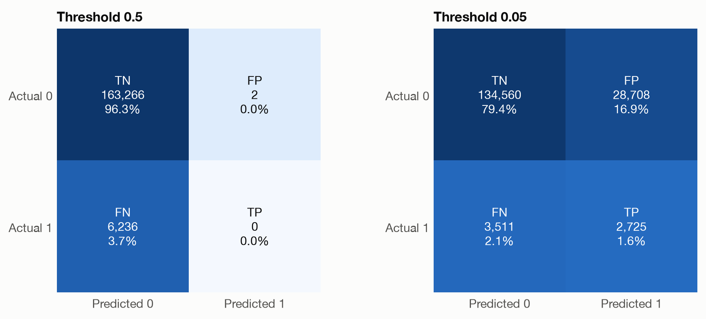
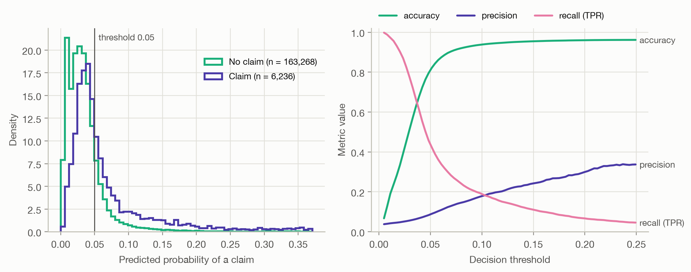

Code
fig, axes = plt.subplots(1, 2, figsize=(9, 3.8))
plot_confusion_matrix(c_half, ax=axes[0], title="Threshold 0.5")
plot_confusion_matrix(c_low, ax=axes[1], title="Threshold 0.05")
fig.tight_layout()
Question answered: if we turn the model’s probabilities into yes/no decisions, how good are those decisions?
Our models predict a probability of a claim. Many uses need a decision instead: inspect this policy or not, refer it to underwriting or not. The usual way to get one is to pick a threshold \(t\) and predict
\[ \hat y = \begin{cases} 1 & \text{if } \hat p \ge t \\ 0 & \text{otherwise.} \end{cases} \]
Every metric on this page evaluates the model together with a threshold. Change the threshold and all of them change.
Comparing decisions with outcomes gives four kinds of cases:
| Predicted 0 | Predicted 1 | |
|---|---|---|
| Actual 0 | true negative (TN) | false positive (FP), ‘false alarm’ |
| Actual 1 | false negative (FN), ‘miss’ | true positive (TP) |
Here is the GBM on the 169,504 test policies at the conventional threshold of 0.5 and at a much lower threshold of 0.05:
fig, axes = plt.subplots(1, 2, figsize=(9, 3.8))
plot_confusion_matrix(c_half, ax=axes[0], title="Threshold 0.5")
plot_confusion_matrix(c_low, ax=axes[1], title="Threshold 0.05")
fig.tight_layout()
At 0.5, the model flags just 2 policies, and 0 of them had a claim. Its highest predicted probability is only 0.52: with a claim rate of 3.7%, very few policies come anywhere near 50%. At 0.05, the model catches 2,725 of the 6,236 policies with claims, at the cost of 28,708 false alarms.
| Metric | Formula | Question it answers |
|---|---|---|
| Accuracy | \(\frac{TP + TN}{N}\) | What share of decisions is correct? |
| Precision | \(\frac{TP}{TP + FP}\) | Of the flagged policies, what share had a claim? |
| Recall, true positive rate (TPR), sensitivity | \(\frac{TP}{TP + FN}\) | Of the policies with a claim, what share did we flag? |
| Specificity, true negative rate (TNR) | \(\frac{TN}{TN + FP}\) | Of the policies without a claim, what share did we leave alone? |
| False positive rate (FPR) | \(\frac{FP}{FP + TN} = 1 - \text{TNR}\) | Of the policies without a claim, what share did we flag? |
| F1 score | \(2 \cdot \frac{\text{precision} \cdot \text{recall}}{\text{precision} + \text{recall}}\) | A single summary of precision and recall (their harmonic mean) |
| Balanced accuracy | \(\frac{\text{TPR} + \text{TNR}}{2}\) | Accuracy if both classes were equally common |
Precision and recall look at the positive class from two sides: precision asks how trustworthy a flag is, recall how complete the flagging is. Raising the threshold usually increases precision and decreases recall.
metrics = ["accuracy", "precision", "recall (TPR)", "specificity (TNR)", "balanced accuracy"]
pd.DataFrame({m: threshold_metrics(y, b[m], 0.5)[metrics] for m in ("Null", "GLM", "GBM")}).round(3)| Null | GLM | GBM | |
|---|---|---|---|
| accuracy | 0.963 | 0.963 | 0.963 |
| precision | NaN | NaN | 0.000 |
| recall (TPR) | 0.000 | 0.000 | 0.000 |
| specificity (TNR) | 1.000 | 1.000 | 1.000 |
| balanced accuracy | 0.500 | 0.500 | 0.500 |
All three models reach an accuracy of about 96.3%, including the Null model, which never predicts a claim. That number is simply the share of policies without a claim. Under class imbalance:
The GBM is not useless, though. The problem is the threshold, not the model.
fig, axes = plt.subplots(1, 2, figsize=(10, 4))
plot_score_distributions(y, b["GBM"], ax=axes[0], threshold=0.05)
plot_threshold_metrics(y, b["GBM"], ax=axes[1])
fig.tight_layout()
The left panel shows why no threshold separates the classes cleanly. Policies with a claim get higher probabilities on average, but the two distributions overlap heavily. The right panel shows the resulting trade-off:
So which threshold is right? That depends on what each kind of error costs, not on the model. If a missed claim costs \(c_{FN}\) and a false alarm costs \(c_{FP}\), and the probabilities are calibrated, the cost-minimizing rule is to flag a policy when
\[ \hat p \ge \frac{c_{FP}}{c_{FP} + c_{FN}}. \]
For example, if a review costs 50 EUR and catching a claim early saves 950 EUR, the optimal threshold is \(50 / (50 + 950) = 0.05\). Decision curves and calibration, covered in later pages, build on this idea.